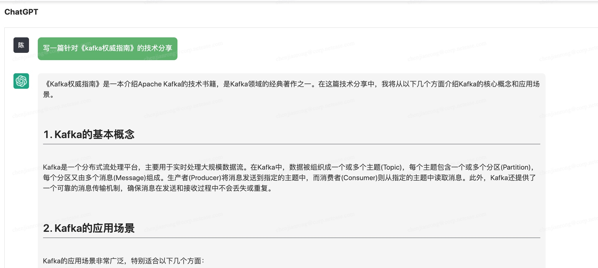

ChatGPT写的一篇《Kafka权威指南》总结
《Kafka权威指南》是一本介绍Apache Kafka的技术书籍，是Kafka领域的经典著作之一。在这篇技术分享中，我将从以下几个方面介绍Kafka的核心概念和应用场景。

1. Kafka的基本概念
Kafka是一个分布式流处理平台，主要用于实时处理大规模数据流。在Kafka中，数据被组织成一个或多个主题(Topic)，每个主题包含一个或多个分区(Partition)，每个分区又由多个消息(Message)组成。生产者(Producer)将消息发送到指定的主题中，而消费者(Consumer)则从指定的主题中读取消息。此外，Kafka还提供了一个可靠的消息传输机制，确保消息在发送和接收过程中不会丢失或重复。
2. Kafka的应用场景
Kafka的应用场景非常广泛，特别适合以下几个方面：
- 实时数据采集和处理：Kafka可以作为数据采集和处理的中间件，用于收集和处理来自各种数据源的实时数据流，例如日志数据、传感器数据、网络数据等。
- 大规模数据处理：Kafka可以作为数据集成和分发的中间件，用于支持大规模数据处理和分析，例如批处理、流处理、机器学习等。
- 消息队列：Kafka可以作为高吞吐量、低延迟的消息队列，用于处理大量的实时消息，例如在线交易、聊天应用、游戏等。
3. Kafka的优势和挑战
Kafka具有以下几个优势：
- 高吞吐量：Kafka能够支持每秒数百万条消息的高吞吐量，适用于大规模数据处理和实时数据流处理场景。
- 可扩展性：Kafka可以通过添加新的节点来扩展性能和容量，支持水平扩展和垂直扩展。
- 可靠性：Kafka提供了可靠的消息传输机制，确保消息不会丢失或重复，支持多副本备份和故障转移。
- 灵活性：Kafka的消息存储和处理机制非常灵活，可以灵活配置主题、分区和消费者组等参数。
然而，Kafka也面临一些挑战：
- 复杂性：Kafka的配置和管理比较复杂，需要投入大量的人力和物力来维护和管理。
- 学习成本：Kafka的核心概念和工作原理比较复杂，需要花费一定的时间和精力来学习和理解。
- 系统稳定性：Kafka的稳定性和可靠性受到很多因素的影响，例如网络延迟、磁盘故障、节点故障等。
4. Kafka的应用实践
Kafka在实际应用中有很多应用场景和应用实践，例如：
- 数据集成和分发：使用Kafka将各种数据源集成到一个统一的数据平台中，支持批量处理和实时处理等多种数据处理方式。
- 实时日志处理：使用Kafka作为日志的收集和分发平台，支持日志的实时处理和分析，例如日志监控、异常检测等。
- 流处理：使用Kafka作为流处理平台，实现实时数据流的处理和分析，例如实时计算、实时推荐、实时预测等。
- 消息队列：使用Kafka作为高吞吐量、低延迟的消息队列，支持在线交易、聊天应用、游戏等高并发场景。
除此之外，Kafka还可以和其他大数据技术结合使用，例如和Hadoop、Spark、Flink等进行数据集成和分析，形成一个完整的大数据处理和分析体系。
5. 从哪些方面入手Kafka
为了更好地应用Kafka，建议从以下几个方面入手：
- 学习Kafka的核心概念和工作原理，理解Kafka的消息传输机制、主题、分区、生产者、消费者等重要概念。
- 熟悉Kafka的应用场景和应用实践，了解Kafka在实际应用中的优势和挑战，以及如何将Kafka应用于不同的场景。
- 掌握Kafka的配置和管理技巧，了解如何优化Kafka的性能和稳定性，如何配置Kafka的主题、分区、消费者组等参数。
- 学习Kafka的客户端API和工具，掌握如何使用Kafka的生产者API、消费者API、管理工具等，进行数据传输、数据处理和数据管理。
- 掌握Kafka的监控和调试技巧，了解如何监控Kafka的运行状态、诊断Kafka的故障、调优Kafka的性能等。
总之，Kafka是一款非常强大的分布式流处理平台，具有广泛的应用场景和应用实践，但是也需要投入大量的人力和物力来维护和管理。通过深入学习和实践Kafka，可以更好地应用Kafka，实现大规模数据处理和实时数据流处理的需求。
6. 常见的问题和解决方案
另外，值得注意的是，Kafka在实际应用中也存在一些常见的问题和挑战，例如：
- 消费者组的负载均衡问题：Kafka的消费者组需要进行负载均衡，确保每个消费者处理相同数量的消息，避免出现负载不均衡的情况。
- 消费者的偏移量管理问题：Kafka的消费者需要管理自己的偏移量，避免出现重复消费或漏消费的情况。
- 消息丢失和重复问题：尽管Kafka提供了可靠的消息传输机制，但是在实际应用中仍然可能出现消息丢失或重复的情况。
针对这些问题，可以采取一些措施来解决，例如：
- 使用消费者组协调器来实现消费者组的负载均衡，确保每个消费者处理相同数量的消息。
- 使用Kafka的偏移量管理机制，确保每个消费者能够正确地管理自己的偏移量，避免出现重复消费或漏消费的情况。
- 配置Kafka的消息保留策略和副本数，确保消息不会丢失或重复。
最后，需要注意的是，Kafka的应用需要结合具体的业务场景和需求来考虑，需要根据实际情况进行配置和调优，才能发挥Kafka的最佳性能和效果。
7. Kafka的生态系统
除此之外，Kafka的生态系统也非常丰富，有很多与Kafka相关的工具和技术，例如：
- Kafka Connect：Kafka Connect是一款开源的数据集成工具，可以将Kafka与其他数据源和数据目的地进行集成，支持多种数据格式和协议。
- Kafka Streams：Kafka Streams是一款开源的流处理框架，可以对Kafka中的数据进行实时处理和分析，支持多种数据操作和聚合操作。
- Confluent Platform：Confluent Platform是一款基于Kafka的企业级数据中心，提供了一系列与Kafka相关的工具和服务，例如Schema Registry、Kafka REST Proxy、Control Center等。
- Apache NiFi：Apache NiFi是一款开源的数据流处理工具，可以将Kafka与其他数据源和数据目的地进行集成，支持多种数据格式和协议。
- Apache Beam：Apache Beam是一款开源的分布式数据处理框架，可以对Kafka中的数据进行批处理和流处理，支持多种数据操作和聚合操作。
这些工具和技术可以帮助用户更好地应用Kafka，实现更多的数据处理和分析需求。同时，也需要注意选择合适的工具和技术，根据实际场景和需求进行选择和配置，才能实现最佳的性能和效果。
8. 总结
作为一款分布式流处理平台，Kafka具有高吞吐量、可扩展性、可靠性和灵活性等特点，适用于大规模数据处理和实时数据流处理场景。同时，Kafka也面临着复杂性、学习成本和系统稳定性等挑战，需要投入大量的人力和物力来维护和管理。在实际应用中，Kafka可以应用于数据集成和分发、实时日志处理、流处理和消息队列等多种场景，并且可以和其他大数据技术结合使用，形成一个完整的大数据处理和分析体系。